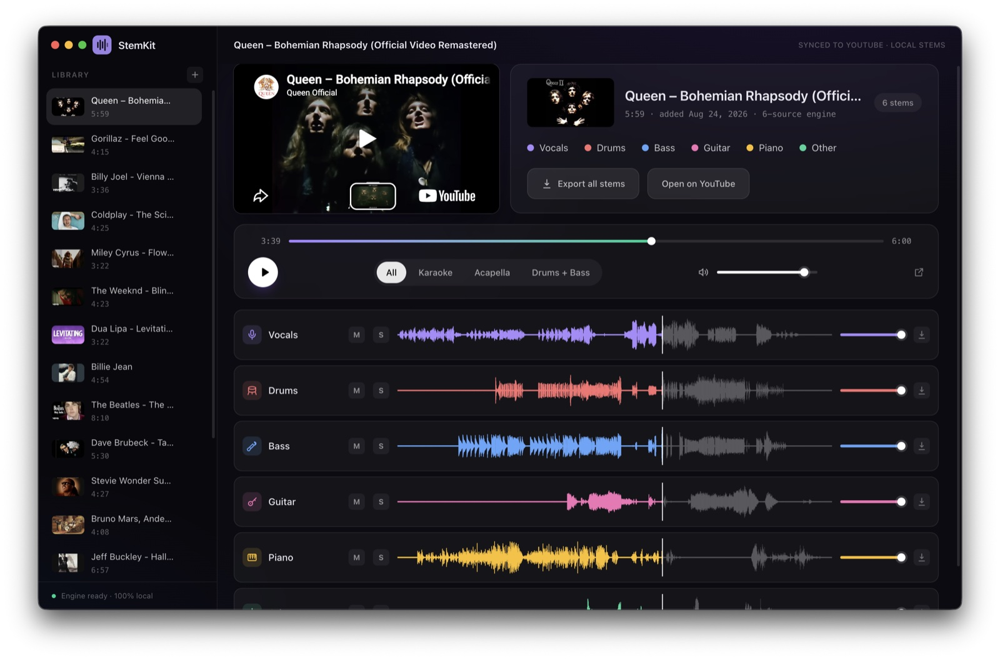

Paste a link, pick your instruments, and play vocals, drums, bass, guitar and piano as synced tracks. Free and open source. Runs entirely on your machine.
fetching the latest release…

How it works
YouTube search is built in. Pick a track without ever opening a browser tab.
Vocals, drums, bass, other, plus guitar and piano. Only what you ask for gets produced.
Stems play synced with the video. Karaoke and acapella are presets, not projects.
The karaoke moment
One preset click removes the vocals from any track. Or flip it: solo the voice and nothing else. Instrumentals and acapellas, straight from the original mix.
Placeholder. Record: play Billie Jean from about 0:30 with the vocals audible, click the Karaoke preset, let the vocals drop dead, keep playing for three more seconds. Seamless loop, 5 to 8 seconds.
MP4 · H.264 · 30fps · no audio · ≤ 6MB · window at 1280×800 · cursor visibleBuilt like a DAW
Click anywhere on any waveform and the stems land on the exact sample, instantly. The video catches up on its own. Scrubbing feels like an instrument, not a spinner.
Placeholder. Record: while a track plays, click three different spots on the vocal waveform in a row, then drag one stem's volume slider. Stems jump instantly, the video follows. 5 to 8 second loop.
MP4 · H.264 · 30fps · no audio · ≤ 6MB · window at 1280×800 · cursor visibleSearch to stems
Search YouTube without opening a tab. Splits run in the background with live progress, and finished songs reopen from the library instantly.
Placeholder. Record: type "bohemian rhapsody" in the search box, click the top result, let the sidebar run its live stage labels, then open the finished song from the library. 8 to 10 seconds.
MP4 · H.264 · 30fps · no audio · ≤ 6MB · window at 1280×800 · cursor visibleThe fine print